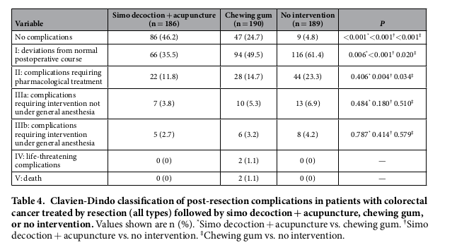

<?xml version="1.0" encoding="UTF-8"?>
<table title="table4" id="table4" class="tabcontent" xmlns="http://www.w3.org/1999/xhtml">
 <tr>
  <td>
   
   <p>../../cm-ucl/corpus-oa-pmr-v02/10.1038_srep37826/tables/table4/table.png</p>
  </td>
  <td>
   <table class="table">
    <caption/>
    <tr>
     <th class="cell">Table4. Clavien-Dindoclassificationofpost-resectioncomplicationsinpatientswithcolorectal cancertreatedbyresection(alltypes)followedbysimodecoction+acupuncture,chewinggum, ornointervention.Valuesshownaren(%). Simodecoction+acupuncturevs.chewinggum. Simo^{*} † decoction+acupuncturevs.nointervention. Chewinggumvs.nointervention.^{‡} </th>
    </tr>
   </table>
   <p>../../cm-ucl/corpus-oa-pmr-v02/10.1038_srep37826/tables/table4/table.svg.html</p>
  </td>
 </tr>
</table>
